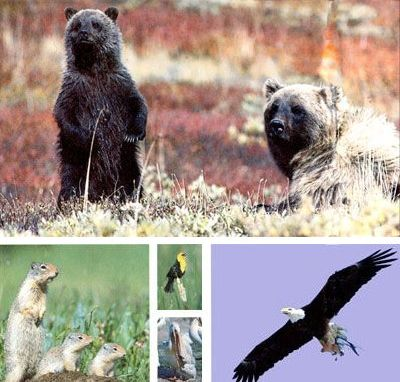
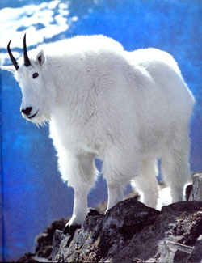
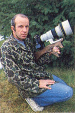
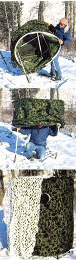
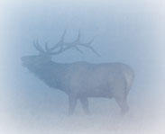

A top professional shares some of the secrets of his artful trade.
This article is excerpted from the third issue of MOTHER's new companion publication, AMERICAN COUNTRY. (The entire third issue is devoted to outdoor adventures and wilderness skills.) You can pick up a copy at your local newsstand beginning June 1, or seepage 16 for details on subscribing to the varied and informative AMERICAN COUNTRY series.
A common misconception among the uninitiated is that professional wildlife photographers spend most of their time stalking through the woods decked out in camouflage like so many photo-Rambos, clicking away at whatever species of animals or birds happen into their view finders. I stalk occasionally, but it's usually futile-wild animals have such keen senses that attempting to approach them generally nets nothing better than blurred shots of the south ends of northbound critters.
A far more productive technique-and one used extensively by professionals-is to concentrate on just one species at a time, learning all you can about both the animal and its home turf, then putting yourself in the right place at the right time and letting your quarry come to you.
One of the most effective (and comfortable) ways to photograph wildlife at close range is to hide yourself in a blind. The trick to successful blind shooting is to set up in a location where your quarry is almost certain to appear-such as near a den, nest, water hole or feeding area.
Although some excellent commercial blinds are available (and an inexpensive camouflaged dome tent can be pressed into service), I prefer to roll my own. With a lot of help from my wife and her sewing machine, I've accumulated a closetful of homespun blinds over the years, each one unique and suited to a specific photographic need.
There are a number of important variables to consider in deciding where to place your blind. Foremost among them is the welfare of the animals you're working with. As a rule of thumb, if your presence seems to be altering the normal behavior of your subjects, you're too close. If, for example, you erect a blind near a nest of hatchling birds and the parents fail to return to care for their chicks, then you should move the blind farther back; if that doesn't ease the parents' worries, disassemble the blind and abandon the area. To avoid problems like this when photographing nesting birds or denning mammals, locate your blind quite a distance away. Then, over a period of several days, gradually move it closer, thus allowing your subjects time to become accustomed to its presence.
You'll quickly learn that the willingness of wildlife to tolerate the intrusion of a blind varies considerably from one species to another, and even among individuals of the same species. I'm reminded of the time several summers ago when I was shooting on a wildlife refuge in north central Montana. With the assistance of the refuge manager, I had erected a blind on an island right at the edge of a colony of nesting white pelicans. Even though the blind was out in the open, the adult birds returned to their chicks as soon as I ducked inside. The pelicans generally ignored me-at times wandering as near as 10 feet-for the seven hours I remained there photographing them.
Now contrast that experience with the time I erected the same blind, again in the open, 80 feet from a deer carcass on which a pair of bald eagles had been feeding. I waited there for eight hours, but the circling eagles kept their distance, refusing to come in. Of course, as soon as I took the blind down and left, the big raptors returned to their feast.
If you're afraid of bad weather or can't drag yourself from bed before dawn, your photo success will suffer.
When positioning a blind, keep in mind not only the angle of the sun, but wind direction as well. For instance, if I wanted to photograph a den of coyotes with direct front lighting, I would set up a blind east of the den to capitalize on the morning sun. And since the prevailing morning winds in this part of the country blow from the west, my scent would be carried away from the coyotes. (You'll come to appreciate the predatory nose the first time the breeze shifts and you watch a previously relaxed bear, wolf, coyote, fox or cat lift its head, glance around nervously, then beat a fleet retreat.)
Another important consideration when siting a blind is assuring an unobstructed view. Few things are more frustrating to a wildlife photographer than waiting long hours in a blind for a particular animal to show itself, then-just as it steps out in the open, bathed in soft afternoon light-finding that your camera's view of its head is blocked by a patch of tall grass you'd failed to notice when you set up.
An alternative to sitting for hours in a blind is to sit for hours in a vehicle. An automobile serves as a blind that-though generally restricted to roadways-provides comfort, mobility, wraparound visibility and the means to approach many species of wild animals and birds without alarming them.
Pheasants, for example, are extremely nervous birds that never hesitate to fly the proverbial coop at the first sign of human approach. But they will frequently allow a vehicle to pull right up alongside them. Consequently, I've photographed nearly every pheasant in my files from the comfort of my pickup. Some animals, such as mule deer, occasionally will even allow you to climb out of your vehicle to film them-as long as you don't move too far in their direction or make any sudden movements.
Obviously, tripods aren't designed to be used in vehicles, but I've found two alternative camera-support systems that are. One is a commercial unit that clamps to the top edge of a side window. This lightweight, compact device performs surprisingly well, allowing me to pan smoothly on moving subjects. I also use a large beanbag of my wife's manufacture. With the window rolled all the way down, I drape the bag over the sill, then nestle my camera and lens into this portable pillow.
Many novices are surprised to learn that professional wildlife photographers don't generally run around the boonies with footlong 800 mm lenses, filming their subjects at incredible ranges. Fact is, the largest lens most pros own is a 600 mm. My largest is a 400 mm (eight power)-on which I occasionally use a 1.4 teleconverter to increase the focal length to 560 mm (roughly 11 power). But my breadand-butter lens is the 400 mm.
One good reason that pros rarely use lenses over 600 mm is the size of the monsters: Not only is a long lens cumbersome to handle, but it magnifies even the slightest movement, producing "soft," or blurred, photos. Of course, you could compensate for movement with a fast shutter speed . . . except that monster lenses also have excessive appetites for light. And since the best wildlife photo opportunities often present themselves in weak light, you're obliged to compensate for a fast shutter speed by using high-speed film-which produces grainy pictures. As you can see, there's no easy way out of this big-lens pickle . . . except to opt for a 400 mm or smaller lens and depend on skill rather than technology to bag the shots you're after.
The rule of thumb for hand-holding a camera is to attempt it only when composition and light conditions permit using a shutter speed that's approximately equal to the focal length of the lens. In other words, you should chance hand-holding a 400 mm lens only when you can use a shutter speed of at least 1/400 second. Likewise, a 135 mm lens would require a shutter speed of at least 1/125, and so on.
I shoot nothing but slides. For one thing, slide film costs less to use than print film-especially if you purchase it in quantity from discount mail-order houses, complete with prepaid, mail-in processing. Another advantage of slides is that they can be projected onto a screen, making for a much more dramatic and enjoyable presentation of your photographic trophies than skimpy little prints. And if you want prints, they can be made from slides almost as easily as from color negs, giving you the best of both worlds. But the single most important reason I shoot slides is that few magazines-the professional photographer's primary customers-will accept anything else.
Wildlife photography demands all of the skills of an expert hunter, plus good camera technique.
I must confess that I've been somewhat narrow-minded in my selection of film in the past, having shot almost exclusively with Kodachrome 64 for several years now. Kodachrome 25 is also an excellent film, but its extremely slow speed renders it too inflexible for wildlife photography. I prefer Kodachrome over other films for its rich color and exceptionally fine grain. I have, on rare occasion, shot Ektachrome 200-and have always been disappointed. Ektachrome is grainy and produces a bluish cast; its advantage is that it can be processed overnight by most local photo labs, while Kodachrome must be sent to a Kodak lab, requiring at least a week for processing and return.
Another film that can be processed locally is Fujichrome, available in ASAs of 50, 100, and 400. Fujichrome is a fine-grained film with excellent color, especially the yellows. A relative newcomer, Fuji holds its own with Kodachrome in every way, and I'll undoubtedly use it more in the future.
I'm often asked by prospective wildlife photographers where they should go to find photogenic subjects. The most popular place-in the lower 48, at least-is Yellowstone National Park, but its extreme popularity is precisely its problem. (That dramatic elk shot loses some of its drama if there's another photographer in the background.) The best place to start is in your own back yard, or perhaps at a local park.
It's a lot cheaper and less frustrating to discover that a new piece of equipment isn't working properly in your own back yard than in a national park half a continent away. Only after you've built confidence in your gear and yourself should you consider tripping off to some faraway wildlife sanctuary.
When you do go, national parks are always good bets-if you can arrange your trip for a season when the wildlife is out in force but the tourists aren't. Better than national parks, in most cases, are wildlife refuges. There are over 400 national refuges in the lower 48 and Alaska, many of them located within weekend striking distance of major metropolitan areas. Waterfowl is the main attraction on most of these refuges, but there's always a host of other interesting critters in such places as well. Depending on the refuge, you may see anything from elk and black bear to bald eagles and whooping cranes. Less dramatic but just as challenging to photograph are songbirds and small mammals such as raccoons, muskrats, porcupines and beavers.
Wildlife photography is a form of hunting; to get good photos you must become a skilled predator. When circumstance requires you to make an open approach to a wild animal or bird, don't charge straight toward it or make direct eye contact. Instead, employ a trick known to wolves and other large predators for millennia: Amble casually toward the subject in a zigzag fashion, appearing to look in another direction while using your peripheral vision to keep track of your quarry. This way, the animal may assume that you're just passing by and present no threat. (This technique works especially well in national parks and on refuges where animals have become somewhat inured to the presence of humans.) You're not likely to get good pictures if you can't drag yourself out of bed before daylight in order to be where you need to be, when you need to be there. The primary reason for doing the early-bird act is that wild animals are most visible during the earliest hours of morning, simply because they're still on the move-feeding, hunting and drifting from feeding to bedding areas. A second reason for getting out early is light. The warm tones of low-angle light are always superior to the harsh glare and deep shadows of midday; photos of wildlife taken at the edges of day seem to glow and almost leap out at the viewer.
Late afternoon is also a good bet-but I've found that on warm days animals rarely start moving until right at sunset when the air begins to cool, leaving you with little light and minimal shooting time.
Don't forgo getting out just because the weather is lousy. Some of the most dramatic pictures in my files were taken on stormy days when I would much rather have been sitting at home with a cup of something hot and a good magazine. When the weather is bleak, wild animals seem to stay active through more of the day. Also, on cloudy days the light is softer, with less contrast. I love to shoot in the fog or during snowstorms because of the variety of moods that can be created. Stormy weather lends pictures more feeling and expression. Sometimes, as when shooting wildlife that's running or flying, it's all you can do just to keep your quarry in the view finder and in focus. But when an animal is stand ing patiently in one of those gorgeous settings that all wildlife photographers dream about, you certainly don't want to blow the opportunity because your exposure is off: The answer is bracketing.
To bracket, simply shoot a frame at whatever f-stop your light meter indicates, then rotate the aperture a half stop at a time, shooting as you go, until you've bracketed a full stop to either side of the meter setting, for a total of five shots. This procedure gobbles film, but it also assures at least one properly exposed photo from each series.
A motor drive is a gadget that mounts to a 35 mm camera body and automatically advances the film at a machine-gun rate of five frames per second. This allows the photographer to concentrate on fastmoving subjects and focus without having to reach up and advance the film by hand. Motor drives also greatly facilitate rapid bracketing. As you might expect, though, they don't come cheap. A less expensive alternative is the autowinder, a device that performs the same chores as a motor drive, but not quite as fast (usually around two frames per second).
(Caution: It's easy to become addicted to these rapid-fire gadgets, but try to keep in mind that even the handiest of accessories are just that-accessories; in no way are they requisite for bagging award-winning photos.)
Wildlife photography is, to borrow an expression from an old song, a many-splendored thing. In addition to the obvious lure of capturing fleeting images on film for the enjoyment of yourself and others-and maybe even picking up a few bucks and some public recognition of your work in the process-there's the excitement and chal lenge of getting close enough to various wild creatures to make telling shots. Then there's the healthy enjoyment of vigorous days spent afield-and, perhaps best of all, the rare privilege of observing firsthand something of the secretive lives of our fellow earthlings.
Editor's Note: Alan D. Carey's wildlife photographs have appeared on the covers and in the pages of American Photographer, Field & Stream, International Wildlife, National Wildlife, National Geographic World, Outdoor Life, Smithsonian and a great many others. Alan's books include In the Path of the Grizzly and (with Gary Turbak) America's Great Cats-available for $11.95 each from your local bookstore, or $13.70 postpaid from Northland Press, P.O. Box N, Flagstaff, AZ 86002. (See the Access review of America's Great Cats on page 126 of this issue.)
|
 Simple home-made blinds can put you in range of ""trophies"" like this fine elk. |
 |
 |
|
 |
 |
|